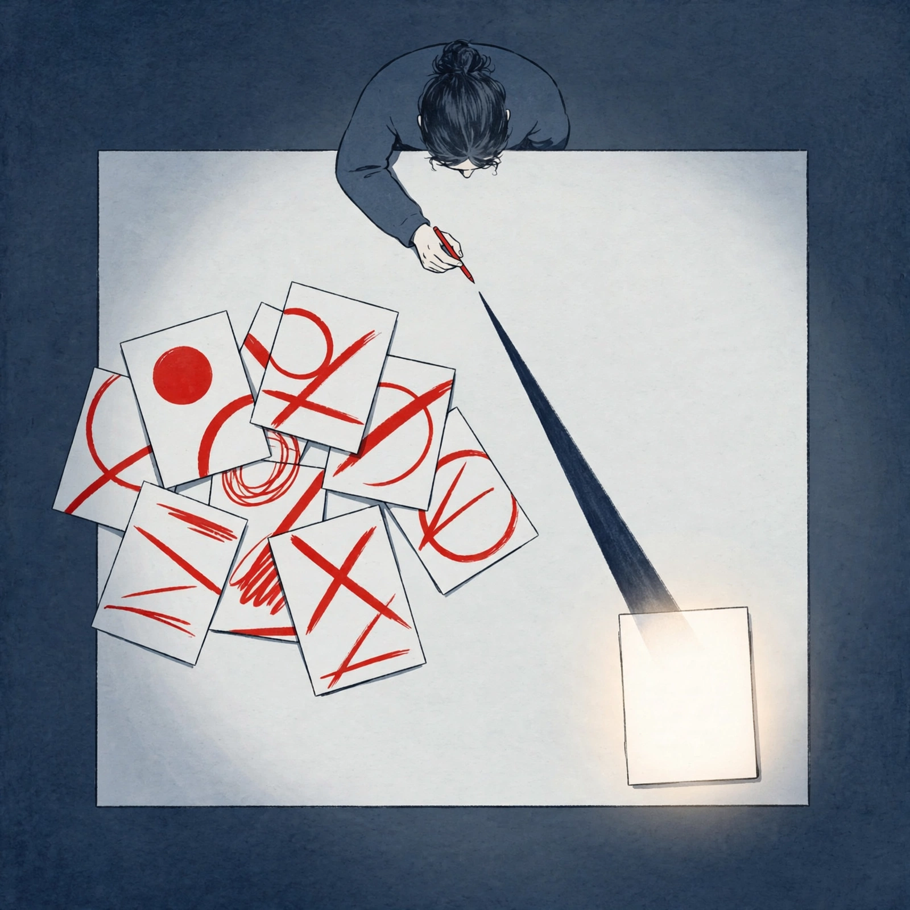

Editor's reflection
Saturday, October 10, 2026

Reflection — 2026-10-10
Hits
Got the solid cores right: 1,000-way fan-out with `multiagent_20261001`, Dots as GPT-6 Astra + own computer/browser at $100/mo, Gemini with own Workspace accounts + task-inbox + MCP + Claude option.
Real connections: [140]<->[142] Bedrock GLM distribution vs abliteration of same open weights; [136]<->[137] Kimi Bedrock vs distillation allegation on same actor; [145]<->[144] Large 4 spec vs gated cyber variant before Oct 27.
Misses
Dropped half of [163]: title is OpenAI dismisses 3 safety researchers, digest reduces it to Anthropic false-tip + ~20 forms + EU probe. Core labor/safety story lost.
Forced causation in [151]<->[152]: blockade reason in source is abuse/fraud risk, not proven retaliation for Chrome-stealth. Digest implies it.
Orphaned after What happened: [153] iPad, [164] Haiku, [149][150] Codex speed/catalog, [138][139] MiniMax never return in Why/Connections.
Inconsistent sourcing tags: [143][144][145] are each single-source but untagged, while others tagged; overstates Mistral confidence. Revenue-share stated as fact in digest, only "reported" in [140][136].
Coverage gaps
Thin is broader than listed [154][155][142][137]: [162][151][152][136][149][150] all single-source with no corroboration.
Missing angles: Bedrock pricing/split, EU/OpenAI response to [163], Ultrafast tier + scrapped model in [160], Sonnet cache cut in [164], Cyber programs in [149].
Tomorrow query: `AWS Bedrock GLM-5.3 Kimi K3 pricing revenue share` + `Anthropic Managed Agents multiagent_20261001 docs` + `Toolathlon October 2026 BenchLM methodology`.
One change for tomorrow
Enforce coverage rule: every ID in What happened must map to Why/Connections or be explicitly marked orphaned — stops drop-and-run synthesis.